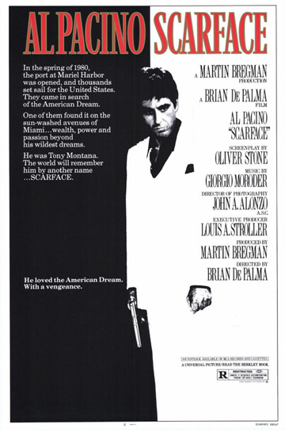

Popüler Filmler

Dövüş Kulübünün birinci kuralı: Asla Dövüş Kulübü hakkında konuşma... Dövüş Kulübünün ikinci kuralı: Asla ve asla dövüş kulübü hakkında konuşma... Jack, hayatın sıradanlığına kapılmış bir sigorta memurudur. Uzun bir süredir 'insomnia' yani uykusuzluk hastalığından şikayetçidir. Kendi psikolojik sıkıntılarından kurtulabilmek adına grup terapilerine katılmaktadır. Terapiler esnasında Marla adında bir kızla tanışır. Bir süre sonra da hayatını değiştirecek olan Tyler Durden ile... Durden, Jack'in ulaşmak istediği tüm hedeflere ulaşmış olan bir adamdır ve Jack'i asla hakkında konuşulmaması gereken bir organizasyon olan 'Dövüş Kulübü' ile tanıştıracaktır. David Fincher'ın kısa sürede kült mertebesine erişen filminin popülerliği dillere destan. Filmin başrollerinde de Brad Pitt, Edward Norton ve Helena Bonham Carter gibi ünlü simaları görmek mümkün...

Lorenzo Anello, oğlu ve eşiyle birlikte Bronx'un oldukça ırkçı bir muhitinde yaşamaktadır. Maddi durumu pek iyi değildir ancak suça hiçbir şekilde bulanmadan, doğru dürüst bir hayat yaşamayı başarmaktadır. Bir gün oğlu, bir gangsterin hiç yoktan bir sebeple bir adamı öldürdüğünü görür. Onu polise ihbar etmediği için gangsterle aralarında bir arkadaşlık başlar. Lorenzo, oğlunun bir gangsterle arkadaş olmasına karşıdır ancak bu, onların arkadaşlarının günden güne ilerlemesini engelleyemeyecektir. Artık bu dürüst aile, suç batağına doğru sürüklenmektedir.
A Bronx Tale, Robert De Niro'nun ilk yönetmenlik deneyimi.

Yaralı Yüz'de, Fidel Castro, Küba’da istenmeyen rejim muhaliflerine Amerika’ya göç etme hakkı tanır. Küba’ya göç edecek olan binlerce insanın içerisinde azılı suçlular ve akıl hastaları da vardır. Bu azılı suçluların en bilinenlerinden Tony Montana da yakın arkadaşı Manny Ribera ile Miami’ye göç eder. Montana kendisini ülkenin uyuşturucu babalarından biri olan Frank Lopez’in kanatlarının altında bulur. Montana’nın ise geldiği yerlerden daha yükseklere ulaşmak yönünde oldukça iddialı ve cesur hedefleri vardır.
1932 tarihli kült filmin Brian De Palma tarafından yeniden çevrilmiş hali olan Scarface’in senaryosunu Oscar’lı yönetmen ve senarist Oliver Stone yazdı. Tony Montana’yı ise Al Pacino canlandırıyor.